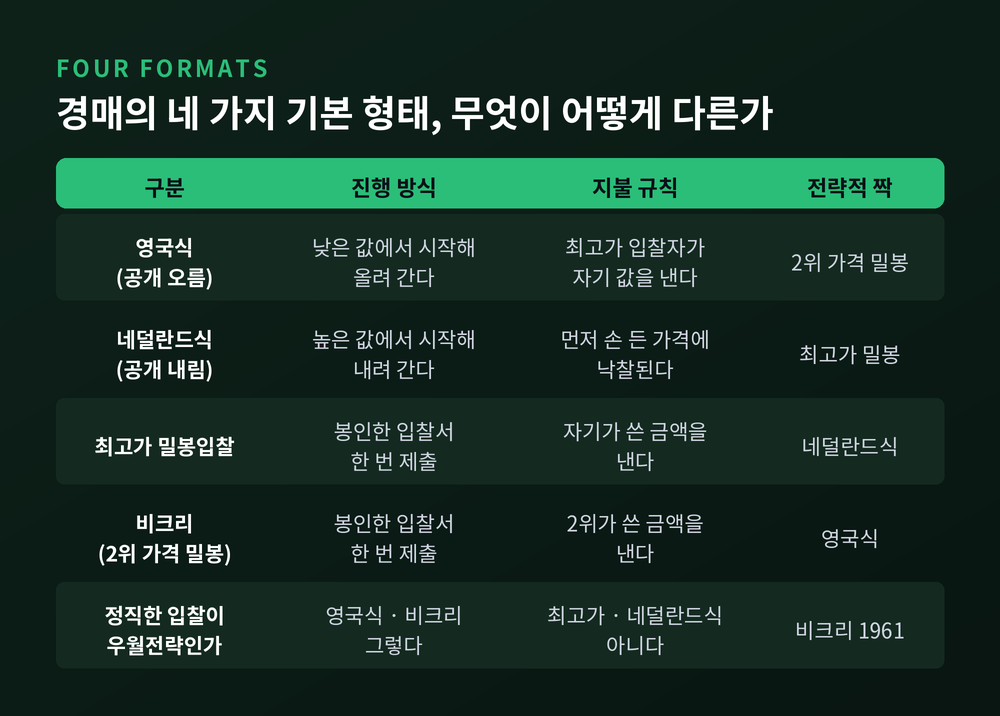
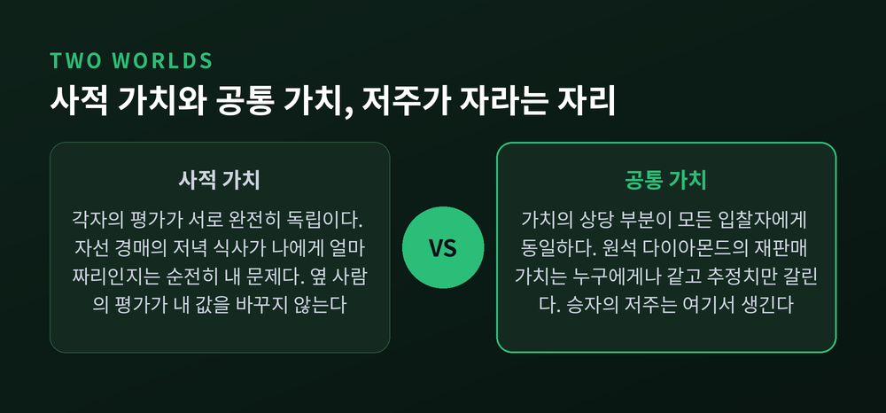
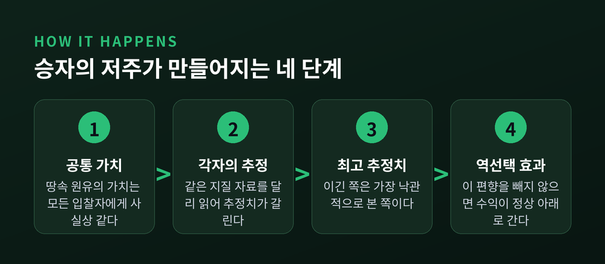
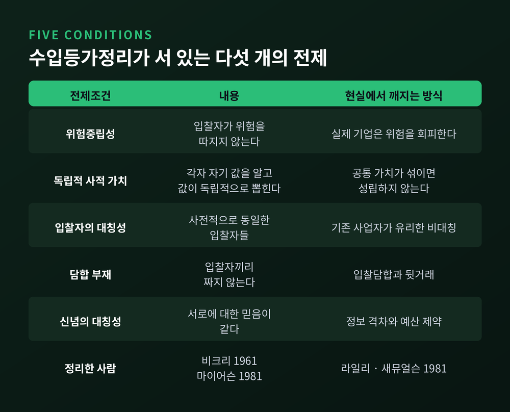
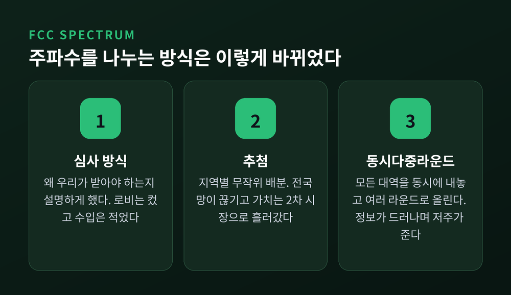
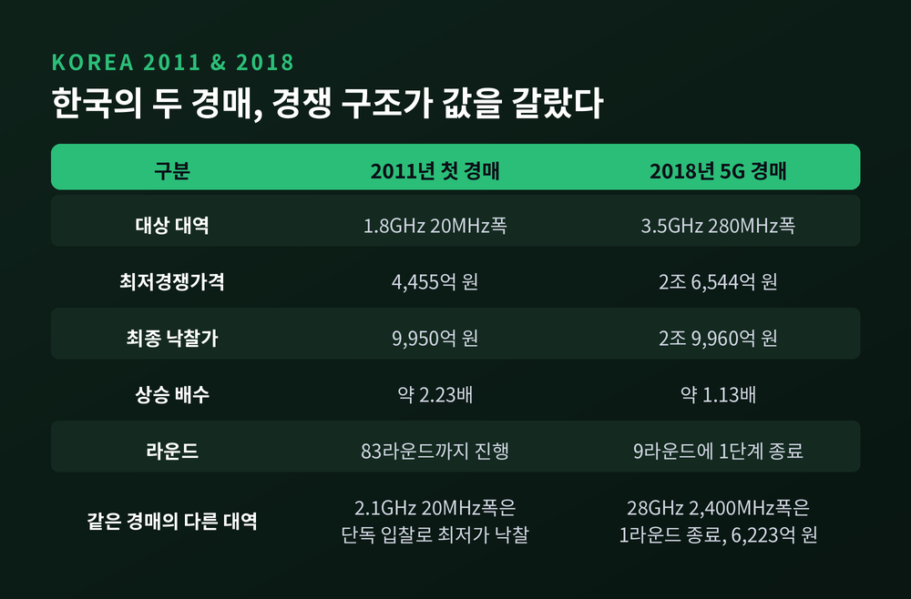

경매 이론과 승자의 저주, 최고가 낙찰이 손해로 끝나는 이유
이번 글에서는 경매가 어떻게 설계되는지, 그리고 왜 최고가로 이긴 쪽이 손해를 보는 일이 반복되는지를 정리해 보겠습니다. 이론과 실제 낙찰 사례를 함께 놓고 보겠습니다.
세 줄 요약
- 경매의 기본 형태는 네 가지입니다. 그중 2위 가격 밀봉입찰에서는 자기 가치를 정직하게 쓰는 것이 우월전략입니다.
- 승자의 저주는 물건의 가치가 모두에게 같은 공통 가치 경매에서 생깁니다. 이긴다는 것은 곧 내가 가장 낙관적이었다는 뜻이기 때문입니다.
- 1994년 미국 주파수 경매는 47라운드에 6억 1,700만 달러를 거뒀고, 2011년 한국의 1.8GHz 대역은 83라운드를 지나 최저가의 2.2배에 낙찰되었습니다.
경매의 기본 형태는 네 가지입니다
경매를 떠올리면 대개 손을 드는 장면이 먼저 그려집니다. 실제 분류는 조금 더 단순합니다.

영국식 경매는 낮은 가격에서 시작해 값을 올려 갑니다. 참가자는 남의 호가를 모두 볼 수 있고, 마지막까지 남은 사람이 자기가 부른 값을 냅니다.
네덜란드식 경매는 반대입니다. 아무도 사지 않을 만큼 높은 가격에서 시작해 값을 내립니다. 누군가 먼저 손을 드는 순간 그 가격에 끝납니다.
최고가 밀봉입찰은 봉투에 금액을 적어 내고, 가장 높이 쓴 사람이 자기가 쓴 금액을 지불합니다. 공공조달에서 익숙한 방식입니다.
마지막이 비크리 경매입니다. 가장 높이 쓴 사람이 낙찰받되, 2위가 쓴 금액을 냅니다.
비크리는 1961년 논문에서 이 네 형태가 둘씩 짝을 이룬다는 점을 짚었습니다. 영국식은 2위 가격 밀봉입찰과, 네덜란드식은 최고가 밀봉입찰과 전략적으로 같습니다. 겉모습이 달라도 참가자가 풀어야 할 문제는 동일하다는 뜻입니다.
비크리 경매에서 정직이 우월전략이 되는 이유
2위 가격 규칙은 처음 들으면 손해처럼 보입니다. 판매자가 왜 1위 가격을 포기하겠습니까.
핵심은 낙찰 여부와 지불 금액이 분리된다는 데 있습니다. 내가 쓴 숫자는 이길지 말지만 결정하고, 실제로 내는 돈은 남이 정합니다.
노벨위원회의 설명은 간결합니다. 자기 지불용의보다 높게 쓰면, 다른 사람도 비슷하게 높게 쓸 경우 손해 보는 가격에 물건을 떠안게 됩니다. 낮게 쓰면, 자기가 낼 용의가 있던 금액보다 싼 값에 남이 가져갑니다. 어느 쪽으로 속여도 이득이 없습니다.
그래서 이 경매에서는 진실한 입찰이 우월전략이 됩니다.
한 가지 더 짚을 대목이 있습니다. 2위 가격 경매는 개인적 합리성만 요구합니다. 남이 어떻게 나올지 예측하지 않아도 최적 입찰이 정해집니다. 반면 최고가 밀봉입찰에서는 상대의 전략에 대한 기대가 내 입찰을 좌우합니다. 결과가 그만큼 덜 견고합니다.
윌리엄 비크리는 이 공로로 1996년 노벨경제학상을 받았습니다. 수상 발표는 10월 8일이었고, 그는 이틀 뒤인 10월 10일 세상을 떠났습니다.
사적 가치와 공통 가치가 갈라지는 지점
저주가 자라는 자리를 알려면 물건의 성격부터 나눠야 합니다.

사적 가치는 각자의 평가가 서로 완전히 독립인 경우입니다. 노벨위원회는 자선 경매의 저녁 식사를 예로 듭니다. 그 자리가 나에게 얼마짜리인지는 순전히 내 문제입니다. 옆 사람이 얼마로 보든 내 값은 변하지 않습니다.
공통 가치는 다릅니다. 물건 가치의 상당 부분이 모든 입찰자에게 동일합니다. 원석 다이아몬드가 그렇습니다. 내 지불용의는 결국 가공한 뒤의 재판매 가치에 달려 있고, 그 값은 누구에게나 같습니다. 다만 각자의 추정치만 다를 뿐입니다.
현실의 경매는 대개 둘이 섞여 있습니다. 천연가스 채굴권이라면 매장량은 공통 가치이고, 캐내는 비용은 기업의 기술에 달린 사적 가치입니다.
승자의 저주라는 말은 유전에서 나왔습니다
1971년, 세 명의 석유 엔지니어가 논문 한 편을 냈습니다. 케이펀과 클랩, 캠벨입니다. 제목은 "고위험 상황에서의 경쟁 입찰"이었습니다.
이들의 주장은 단순했습니다. 미국 외대륙붕 원유 시추권 경매에서 석유회사들이 해가 바뀌어도 계속 기대 이하의 수익을 냈다는 것입니다. 집필 동기부터 구체적이었습니다. 한 회사가 입찰한 광구를 전부 낙찰받는 바람에 몇 년간 예산 압박에 시달린 일이 있었습니다.

작동 원리는 이렇습니다. 땅속 원유의 가치는 모두에게 같습니다. 각 회사는 그 값에 대한 자기 추정치를 갖습니다. 추정치가 평균적으로 편향되지 않았다 해도 문제는 남습니다. 이겼다는 사실 자체가 정보이기 때문입니다.
낙찰자의 추정치는 참가자 중 가장 높은 축입니다. 이긴다는 것은 내가 가장 낙관적이었다는 뜻입니다. 이 역선택 효과를 계산에 넣지 않고 자기 추정치를 그대로 써내면, 정상 이하의 수익이 나거나 아예 마이너스가 납니다.
케이겔과 레빈은 이것을 한 문장으로 압축했습니다. "당신은 이기고, 돈을 잃고, 그리고 욕을 한다."
숫자로도 확인됩니다. 헨드릭스와 포터, 탄이 1954년부터 1969년까지의 미 연방 시추권 경매를 분석한 결과, 탐사정 광구에서 입찰자가 7인 이상이었던 경우 낙찰자들은 탐사·개발 비용을 반영하면 순이익이 마이너스였습니다.
실험실에서도 저주는 반복되었습니다
경제학자들은 오랫동안 이 주장을 미심쩍게 봤습니다. 사람이 같은 실수를 반복한다는 말은 합리성 가정과 충돌하니까요. 현장 데이터만으로는 판정이 어렵다는 지적도 타당했습니다.
그래서 실험이 이어졌습니다. 결과는 대체로 한 방향이었습니다.
경험 없는 입찰자는 승자의 저주에 매우 취약했습니다. 진짜 가치를 아는 내부자가 있다는 사실을 알려 줘도 나아지지 않았습니다. 참가자가 넷일 때 저주를 피우는 법을 익힌 사람도, 참가자가 일곱으로 늘면 다시 빠졌습니다. 역선택 효과가 커지는데 학습이 따라가지 못한 것입니다.
인상적인 대목은 따로 있습니다. 업계 임원을 대상으로 한 실험에서도 학생 피험자와 같은 정도로 저주에 빠졌습니다.
다만 완화 장치가 없지는 않았습니다. 영국식 공개 경매에서는 낮은 값을 부른 참가자가 빠지는 것을 보며 정보를 얻기 때문에 저주가 줄었습니다. 그러나 그 경험은 밀봉입찰로 옮겨 가지 않았습니다.
용어에는 혼선이 있습니다. 케이겔과 레빈은 승자의 저주를 역선택을 감안하지 못해 실제로 손해 보는 오류로 봅니다. 반면 많은 이론가는 낙찰 조건부 기댓값과 무조건부 기댓값의 차이 자체를 그렇게 부릅니다. 두 용법이 섞여 있다는 점은 알고 읽는 편이 좋습니다.
수입등가정리, 그리고 다섯 개의 전제
비크리는 흥미로운 결과 하나를 더 남겼습니다. 참가자들의 가치평가가 독립이고 한 구간에서 균등하게 분포한다면, 네 가지 경매 모두 판매자에게 같은 기대가격을 준다는 것입니다. 훗날 수입등가정리로 불리게 됩니다.

여기서 자주 생기는 오해가 있습니다. "어떤 경매를 쓰든 결과는 같다"는 말이 아닙니다. 조건이 붙습니다.
마이어슨과 라일리·새뮤얼슨이 정리한 전제는 다섯입니다. 위험중립성, 독립적 사적 가치, 입찰자의 대칭성, 담합 부재, 신념의 대칭성입니다.
현실에서는 이 조건이 거의 언제나 깨집니다. 위험을 회피하는 기업이 있고, 예산 제약이 있고, 기존 사업자가 유리한 비대칭이 있고, 담합이 있습니다. 그래서 형식 설계가 중요해집니다.
정리는 형식이 무의미하다는 뜻이 아니라, 형식이 언제 의미를 갖는지를 알려 주는 지도에 가깝습니다.
같은 계열의 결과로 유보가격이 있습니다. 판매자 수입을 극대화하는 경매는 유보가격이 붙은 2위 가격 경매입니다. 유보가격은 거래 성사 확률을 낮추는 대신 경쟁 압력을 키웁니다. 실험에서는 담합을 노린 뒷거래 제안 금액과 성공률도 함께 낮추는 것으로 나타났습니다.
주파수 경매가 이론의 시험장이 되었습니다
이론이 실제 제도로 넘어온 무대는 전파였습니다.
미국은 처음에 심사 방식을 썼습니다. 기업들이 왜 자기가 받아야 하는지 설명하는 방식이었고, 통신·미디어 기업이 로비에 막대한 돈을 썼습니다. 정부 수입은 적었습니다.
다음은 추첨이었습니다. 지역별로 뽑다 보니 전국 사업자는 지역마다 대역이 제각각인 불연속 망을 갖게 됐습니다. 서로 사고파는 2차 시장이 커졌고, 수십억 달러의 가치가 국고 대신 투기 세력에게 흘러갔습니다.
1993년, 미국은 경매로 방향을 틀었습니다.
문제는 설계였습니다. 특정 지역 대역의 가치는 그 사업자가 다른 지역에서 무엇을 확보하느냐에 달려 있습니다. 순차로 팔면 사업자는 얼마를 써야 할지 알 수 없습니다. 불확실하면 낮게 쓰거나 빠집니다.

폴 밀그럼과 로버트 윌슨이 프레스턴 맥아피와 함께 내놓은 답이 동시다중라운드 경매(SMRA)입니다. 모든 물건을 한꺼번에 내놓고, 낮은 가격에서 시작해 여러 라운드에 걸쳐 반복 입찰을 받습니다. 라운드마다 입찰이 공개되므로 참가자는 남의 평가를 읽으며 자기 추정을 고쳐 갑니다. 불확실성이 줄고, 승자의 저주도 함께 줄어듭니다.
1994년 7월 미 연방통신위원회가 이 방식으로 면허 10개를 47라운드 만에 6억 1,700만 달러에 팔았습니다. 그전까지 사실상 무상으로 나눠 주던 물건이었습니다. 1994년부터 2014년까지 20년간 이 경매로 1,200억 달러 이상이 걷혔고, 전 세계로는 2,000억 달러를 넘겼습니다.
두 사람은 2020년 노벨경제학상을 받았습니다. 수상 사유는 경매 이론의 개선과 새로운 경매 형식의 발명이었습니다.
밀그럼이 정리한 원리 하나는 특히 실무적입니다. 입찰과 입찰자의 사적 정보 사이의 연결이 강할수록 판매자의 수입이 높아집니다. 그래서 판매자는 경매 전에 물건의 정보를 최대한 공개하는 편이 유리합니다. 집을 팔 때 독립적인 감정평가를 미리 붙이는 쪽이 값을 더 받는다는 이야기입니다.
2000년 유럽, 그리고 2011년 여름의 한국
이론이 좋아도 과열은 막지 못했습니다.
2000년 4월 27일, 영국의 3G 면허 경매가 225억 파운드로 끝났습니다. 국민총생산의 약 2.5%였습니다. 넉 달 뒤인 8월 18일, 독일 UMTS 경매는 14일간 173라운드를 거쳐 508억 유로에 마감했습니다.
당시 통신주는 정점이었고, 기업들은 면허를 놓치면 미래가 없다고 믿었습니다. 공통 가치의 불확실성이 큰 상황에서 전형적인 과잉 입찰이 일어난 셈입니다.
이후 평가는 갈립니다. 한쪽에서는 막대한 면허료 탓에 인프라 투자 여력이 줄었고, 규제당국이 낙찰자들이 투자 대신 부채 상환에 매달리는 모습을 보며 경매 방식을 재검토했다고 봅니다. 다른 쪽에서는 이미 지불한 면허료는 매몰비용이므로 이후 투자 부진의 직접 원인이라 보기 어렵고, 진짜 문제는 킬러 서비스의 부재와 수요 부진이었다고 봅니다. 어느 한쪽으로 정리되지 않은 논쟁입니다.
한국은 사정이 달랐습니다. 3G 사업권은 경매가 아니라 심사로 배분했습니다. 주파수 경매 제도는 2010년 7월 전파법 개정으로 도입돼 2011년 1월 시행됐습니다.

첫 경매는 2011년 8월 17일 분당의 한 협회 건물에서 열렸습니다. 1.8GHz 대역 20MHz폭을 두고 두 회사가 붙었습니다. 최저경쟁가격은 4,455억 원이었고, 상한가는 없었습니다.
숫자가 올라간 속도를 보면 분위기가 읽힙니다. 첫날 11라운드에 4,921억 원, 사흘째 31라운드에 6,005억 원, 엿새째 71라운드에 8,941억 원. 8월 26일 82라운드에서 9,950억 원에 닿았습니다. 규제당국은 과열이 오더라도 8,000억 원이 상한일 것으로 봤지만 빗나갔습니다.
결국 8월 29일 한쪽이 입찰을 포기하며 9,950억 원에 끝났습니다. 포기한 회사 대표는 이렇게 말했습니다. "주파수만 놓고 본다면 최대 1조5천억 원 정도가 적정 가치라는 전문가 견해가 있기는 했으나 주파수 하나만 놓고 생각할 수는 없었다."
같은 경매에서 다른 대역은 단독 입찰이 되어 최저경쟁가격 4,455억 원에 그대로 넘어갔습니다. 똑같은 20MHz폭인데 경쟁 여부에 따라 값이 두 배 넘게 갈렸습니다. 낙찰가는 물건의 값이기 이전에 경쟁 구조의 값이라는 뜻입니다.
2018년 5G 경매는 설계로 답했습니다
7년 뒤의 경매는 성격이 달랐습니다.
2018년 6월 15일부터 18일까지 이틀간 진행된 5G 주파수 경매에서, 3.5GHz 대역 280MHz폭은 최저경쟁가격 2조 6,544억 원에서 2조 9,960억 원에 낙찰됐습니다. 28GHz 대역 2,400MHz폭은 6,216억 원에서 6,223억 원으로 끝났습니다. 총 낙찰가는 3조 6,183억 원, 최저가 대비 상승분은 약 3,400억 원이었습니다.
3.5GHz는 9라운드 만에 1단계가 끝났고, 28GHz는 1라운드에서 종료됐습니다. 83라운드를 끌던 2011년과는 완전히 다른 그림입니다.
담당 국장의 설명이 설계 의도를 잘 보여 줍니다. 과거에는 경쟁사를 견제해 비용을 올려놓고 자기는 빠지는 전략이 자주 쓰였습니다. 이번에는 수요와 무관하게 라운드를 올리면 그 비용을 자기도 치르도록 구조를 짰습니다. 견제보다 자기 수요를 싸게 가져가는 쪽이 합리적 선택이 되게 만든 것입니다.
물론 이 경매도 논쟁을 피하지 못했습니다. 최저경쟁가격이 높다는 의견과, 대역폭에 비해 너무 싸게 줬다는 의견이 함께 있었습니다. 정부도 브리핑에서 두 시각의 존재를 인정했습니다.
뒷이야기는 조금 씁쓸합니다. 거의 최저가로 팔린 28GHz 대역은 결국 쓰이지 못했습니다. 의무 구축 수량 1만 5,000개에 크게 못 미친 1,000여 개 수준에 그치면서, 2022년 12월 두 사업자의 할당이 취소됐고 남은 한 곳도 2023년 5월 취소가 확정됐습니다.
싸게 산다고 잘 쓰는 것은 아닙니다. 경매는 값을 정할 뿐, 그 뒤의 이행까지 보장하지는 않습니다.
담합, 유보가격, 그리고 광고 경매
경매의 적은 과열만이 아닙니다. 반대편에 담합이 있습니다.
담합은 수입등가정리의 전제 하나를 정면으로 깹니다. 흥미로운 점은 승자의 저주가 담합을 막기도 한다는 것입니다. 사적 가치 환경에서는 효율적 담합이 늘 가능하지만, 공통 가치 환경에서는 저주에 대한 두려움 때문에 담합 조직 자체가 만들어지지 못하는 경우가 있습니다. 실제로 미 시추권 경매에서는 공동입찰이 합법이었는데도 상위 12개 입찰자의 공동입찰 비중은 그들 입찰의 18.6%에 그쳤습니다.
국내 입찰담합은 여전히 무거운 주제입니다. 공정거래위원회 통계연보 기준 2024년 과징금 부과 건수는 194건으로 전년 124건보다 56.5% 늘었고, 2015년 이후 가장 많았습니다. 특판가구 입찰담합 사건의 영향이 컸다고 공정위는 설명했습니다.
마지막으로 온라인 광고입니다. 검색광고는 오랫동안 일반화된 2위 가격 경매를 써 왔습니다. 순위대로 슬롯을 나누고 각자 바로 아래 순위의 값을 내는 방식입니다.
에덜먼과 오스트로프스키, 슈워츠는 2007년 논문에서 이 방식이 비크리 경매와 다르다는 점을 보였습니다. 슬롯이 여럿이면 진실한 입찰이 균형이 아닙니다. 논문의 예에서는 일부러 순위를 한 칸 낮추는 쪽이 이득이 더 큽니다.
그리고 2019년, 구글은 광고 관리 플랫폼의 디스플레이·비디오 물량을 1위 가격 경매로 바꾼다고 발표했습니다. 단일 통합 경매를 도입하고 자사에 유리했던 관행도 함께 없앴습니다. 이론적으로 가장 우아한 형식이 실무에서 늘 이기는 것은 아니라는 사례입니다.
끝으로 한 마디만 더 드리겠습니다.
경매 이론이 알려 주는 것은 "얼마를 써야 하나"가 아닙니다. "이 규칙 아래에서 이긴다는 것이 무슨 뜻인가"입니다. 2위 가격 경매에서는 정직해도 손해가 없고, 공통 가치 경매에서는 이겼다는 사실이 이미 나쁜 소식입니다.
예전에는 경매를 그저 값을 올리는 장치로 여겼습니다. 지금은 어떤 정보가 언제 드러나느냐가 값을 만든다는 쪽에 무게가 실립니다. 1994년의 47라운드와 2011년의 83라운드가 그 차이를 보여 줍니다.
물론 이론이 모든 것을 막아 주지는 않습니다. 잘 설계된 경매에서도 사람은 낙관에 기울고, 최저가에 산 대역이 끝내 반납되기도 합니다.
— 이기는 법을 아는 것보다, 이겼을 때 무엇을 알게 되는지를 아는 편이 낫습니다.
경매에서 최고가를 부르는 일이 늘 어리석으냐고 물으신다면, 그렇지는 않다고 답하겠습니다. 다만 내가 왜 남들보다 높게 봤는지 설명하지 못한다면, 그 값은 확신이 아니라 착시일 가능성이 큽니다.